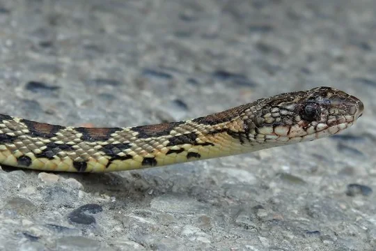
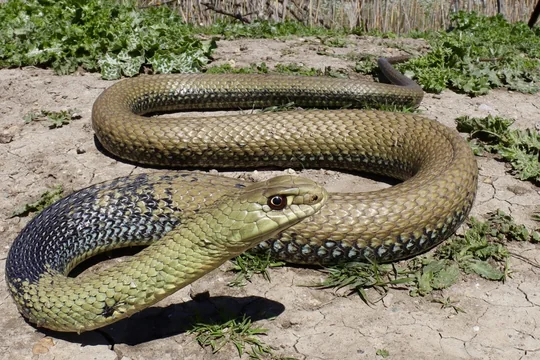
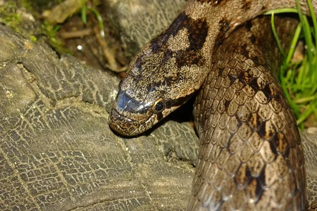
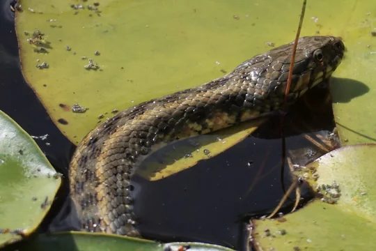
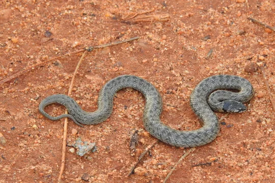

Snakes of Gibraltar
7 living snake species are recorded in Gibraltar in SnakeList: 2 venomous and 5 non-venomous, from 2 families.
- 7living species
- 2families
Danger to people · tap a number to show only those snakes
- 0harmful to people
- 0dangerously venomous
- 0giant constrictors
Harmful = dangerously venomous + giant constrictors. HarmlessLow risk = not venomous and not a giant constrictor. Mildly venomous snakes have no serious bites to people documented. Any snake can bite.
Gibraltar is a territory, not a sovereign country; SnakeList lists it as a place of its own. These totals count the unique living snake species SnakeList records in Gibraltar. A species counts if it is recorded anywhere in the territory, so not every snake lives in every part of it.
In SnakeList’s checklist filters
How many of the 7 living species here each filter in the SnakeList app picks out – tap a number to show only those snakes.
Snake family2 types, 2 families
Type
Family
Habitats12 habitat groups
Habitats are estimated from where each snake is recorded and what kind of snake it is, as in SnakeList; a snake can count in several.
Characteristics2 venomous, 2 constrictors
Constrictor and Non-constrictor count only snakes whose family or genus is documented as constricting or not; the rest are not documented.
Other filters0 popular, 0 rare
- 0popular
- 0rare
- 0no photos
- 0extinct
- 0harmful
Species
Showing 7 species

Horseshoe Whip SnakeHemorrhois hippocrepis Iberian Grass SnakeNatrix astreptophora
Iberian Grass SnakeNatrix astreptophora Ladder SnakeZamenis scalaris
Ladder SnakeZamenis scalaris
Montpellier SnakeMalpolon monspessulanus
Southern Smooth SnakeCoronella girondica
Viperine SnakeNatrix maura
Western False Smooth SnakeMacroprotodon brevis
No snakes in Gibraltar match.